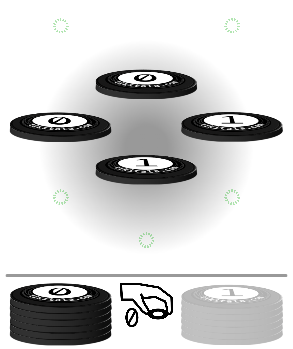
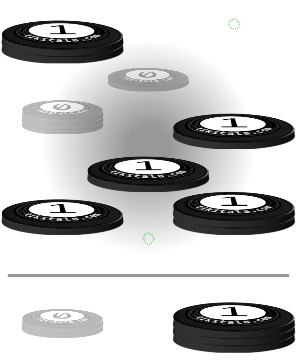
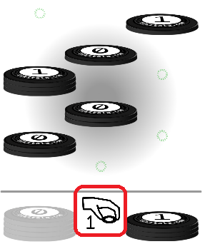
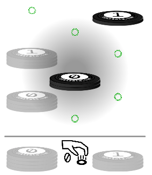

Let's learn how to play this strategic 2-player board game.
This quick tutorial will guide you through the rules and gameplay.
Tip: You can restart this tutorial anytime by clicking the ? button in the top-right corner.

2 players, each starting with 8 chips
The game begins with 2 chips from each player already placed on the board
Your chips are in your stash on the sides of the board, ready to be played!

First player to get 5 of their chips showing on top wins!
Only the top chip of each stack counts toward your total
Strategy matters: You can cover your opponent's chips by placing yours on top!

Players alternate turns, one move at a time
The center icon shows:
• Whose turn it is (Player 0 or Player 1)
• Whether to PICK up a chip or PLACE it
Each move has 2 clicks:
1️⃣ Click to pick up a chip
2️⃣ Click to place it on a stack

Grayed-out stacks cannot be used. This happens when:
• A stack already has 3 chips (maximum limit)
• The chip was just moved by your opponent (you can't immediately move it back)
Quick tip: Plan ahead! Think about which stacks your opponent can access on their next turn.